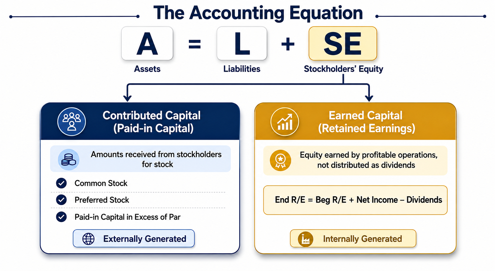
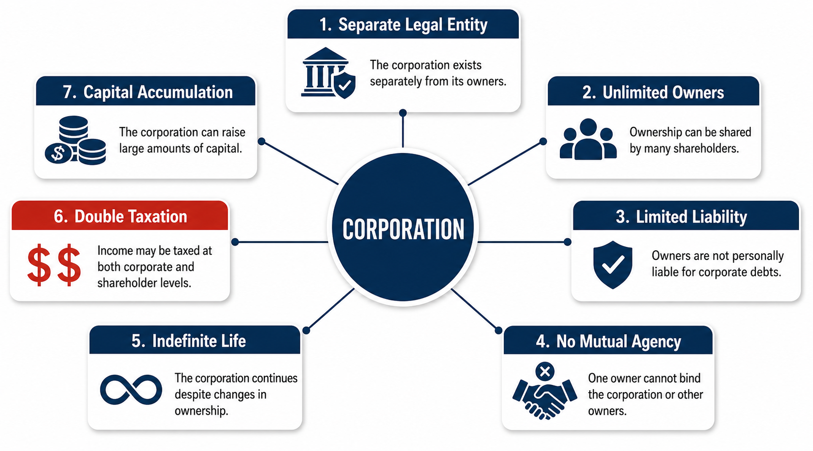
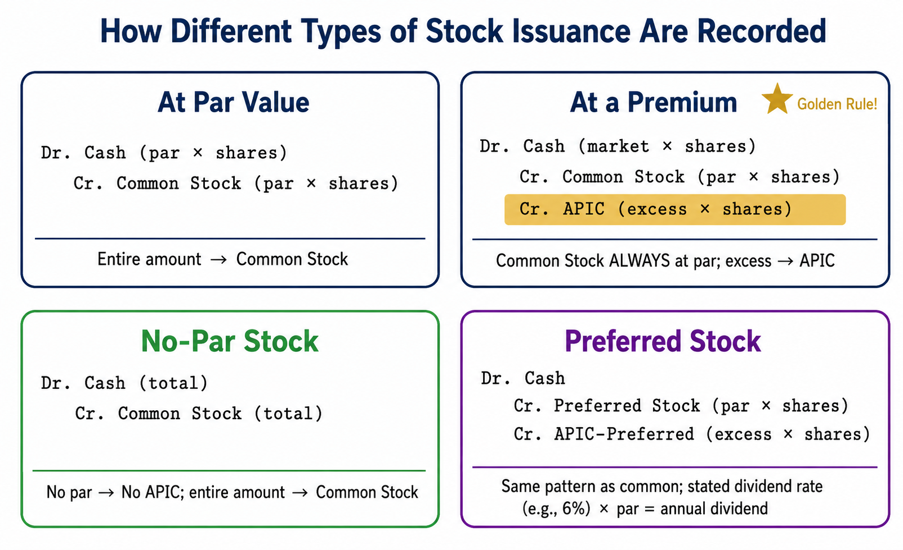
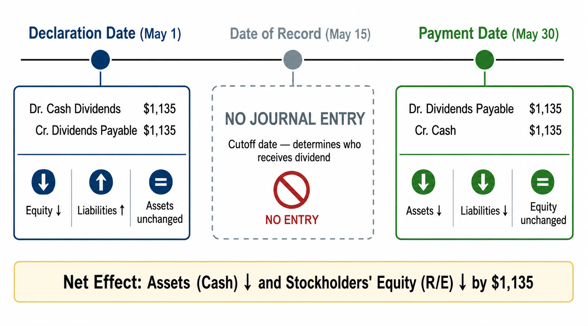
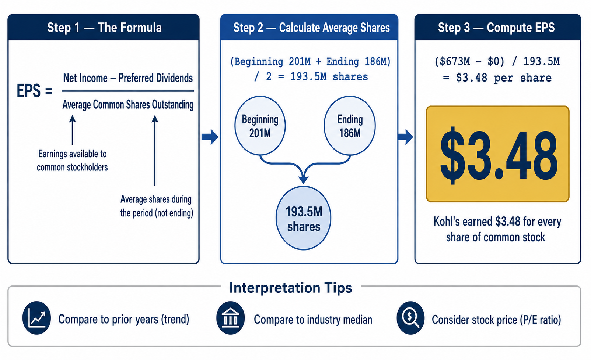

Corporations, Stock Issuance, Cash Dividends, and Earnings Per Share
Throughout this course, we have explored how businesses acquire assets, incur liabilities, and generate revenue. In this final chapter, we turn to the right side of the accounting equation and examine stockholders’ equity—the owners’ claim on the assets of a corporation. Understanding equity is essential because it reveals how a company is funded, how profits are shared, and how investors evaluate corporate performance.
Recall the accounting equation: Assets = Liabilities + Stockholders’ Equity. Stockholders’ equity consists of two broad categories:
Let’s begin by examining what makes a corporation unique, then explore how stock issuance, dividends, and key financial ratios work in practice.

A corporation is a business organized under state law as a separate legal entity, distinct from its owners. Corporations dominate business activity in the United States—most well-known companies, from Apple to Walmart, are corporations. They tend to be large multinational businesses, though a corporation can also have just a single stockholder.
Corporation — A business organized under state law that is a separate legal entity from its owners (stockholders). It is created by filing a certificate of formation (or articles of incorporation) with a state, which grants a corporate charter.
A corporation has several unique characteristics that distinguish it from sole proprietorships and partnerships:
| Characteristic | Description |
|---|---|
| Separate Legal Entity | A corporation is organized independently of its owners. It can own property, enter contracts, sue and be sued in its own name. |
| Number of Owners | Corporations can have one or more owners (stockholders). A public corporation’s stock trades on exchanges like the NYSE or NASDAQ. A private (closely held) corporation’s stock is not publicly traded. |
| No Personal Liability | Stockholders are not personally liable for the corporation’s debts. Their risk is limited to the amount they invested. |
| Lack of Mutual Agency | Individual stockholders cannot bind the corporation to a contract. Unlike in a partnership, one owner cannot commit the business without authority. |
| Indefinite Life | A corporation has a continuous (indefinite) life. The death or departure of a stockholder does not dissolve the business. |
| Taxation | Corporations are separate taxable entities. Corporate income is taxed at the corporate level and again when distributed to stockholders as dividends—this is called double taxation. |
| Capital Accumulation | Corporations can raise large amounts of capital by issuing stock to many investors through an Initial Public Offering (IPO). This gives them a financing advantage over other business forms. |
Double taxation is the biggest disadvantage of the corporate form. The corporation pays income tax on its earnings, and then stockholders pay personal income tax on the dividends they receive. The same dollar of profit is taxed twice. Despite this, corporations remain the dominant form of business because their ability to raise capital and limit personal liability outweighs the tax disadvantage.

When a corporation is created, the state grants it a corporate charter (articles of incorporation). The charter specifies the maximum number of shares the corporation is allowed to issue. Understanding the categories of stock is fundamental:
The following diagram illustrates how these categories relate to each other. Think of it as nested boxes: authorized stock is the outermost boundary, issued stock fits inside it, and issued stock is further divided into outstanding shares and treasury shares.
When you purchase stock in a corporation, you receive a stock certificate—paper (or electronic) evidence of your ownership. As a stockholder, you have four basic rights (unless a right is withheld by contract):
| Right | Description |
|---|---|
| Vote | Each share of common stock carries one vote. Stockholders vote on corporate matters at annual meetings, including the election of the Board of Directors. This is the only way stockholders participate in management. |
| Dividends | Stockholders receive a proportionate share of any dividend that the Board of Directors declares. Dividends are not automatic—the board must declare them. |
| Liquidation | If the corporation goes out of business, stockholders receive their proportionate share of any assets remaining after all creditors have been paid. |
| Preemptive Right | Stockholders have the right to maintain their proportional ownership when new shares are issued. However, this right is usually withheld by contract in most corporations. |
Many students assume that owning stock guarantees you will receive dividends. That is not true. Dividends are declared at the discretion of the Board of Directors. A company may choose to reinvest its profits rather than distribute them. Stockholders have the right to receive dividends if declared—but declaration is not guaranteed.
Corporations can issue different classes of stock. Every corporation must issue common stock, which represents the basic ownership of the corporation. Additionally, a corporation may issue preferred stock, which gives its owners certain advantages over common stockholders.
A corporation’s stockholders’ equity comes from two distinct sources. State law requires corporations to report these separately because some capital must be maintained by the company and cannot be used for dividends.
Companies raise capital by issuing stock. A company can sell its stock directly to investors or use the services of an underwriter—a firm that handles the issuance of stock to the public. An underwriter assumes some of the risk by agreeing to buy unsold shares. Stocks of public companies trade on exchanges such as the New York Stock Exchange (NYSE) or the NASDAQ Stock Market.
The issue price is the amount a corporation receives when it first issues stock. This is the price at which the stock initially sells. After issuance, the stock trades on the open market at fluctuating prices—but those daily market price changes are not recorded on the corporation’s balance sheet. The corporation only records the initial issuance transaction.
Students often confuse the issue price with the market price. The issue price is what the corporation receives at the initial sale. After that, the stock may trade at $50, $100, or $5 on the open market—none of those changes affect the corporation’s books. The corporation already received its cash at issuance.
When a corporation issues stock at exactly its par value, the journal entry is straightforward. The Common Stock account is always recorded at par value.
Smart Touch Learning’s corporate charter authorizes 20,000,000 shares of $1 par common stock. The company issues 15,000 shares at the par value of $1 per share.
Cash received = 15,000 shares × $1 per share = $15,000. Since the stock was issued at par, the entire amount goes to the Common Stock account.
Most corporations set par value very low and issue stock at a price above par. The amount above par is called a premium. A premium on stock issuance is not a gain, income, or profit—it is simply another type of paid-in capital. The premium is recorded in an account called Paid-in Capital in Excess of Par—Common (also known as Additional Paid-in Capital, or APIC).
Here is the golden rule for stock issuance: Common Stock is ALWAYS recorded at par value. Whatever the market price, whatever the issue price—the Common Stock account always gets debited or credited at the par value per share. Any amount over par goes to the Paid-in Capital in Excess of Par account.
Smart Touch Learning issues an additional 3,000 shares of its $1 par common stock at a market price of $5 per share. The $4 difference between the issue price ($5) and par value ($1) is the premium.
Cash: 3,000 × $5 = $15,000 • Common Stock: 3,000 × $1 par = $3,000 • APIC: 3,000 × $4 premium = $12,000
After these two issuances, Smart Touch Learning has issued 18,000 shares (15,000 + 3,000) of its authorized 20,000,000 shares. The stockholders’ equity section of the balance sheet would appear as follows (assuming Retained Earnings of $3,550):
When a company issues no-par stock, the entire amount received goes directly to the Common Stock account. Since there is no par value, there can be no “excess of par”—so no Paid-in Capital in Excess of Par account is needed.
Assume Smart Touch Learning’s common stock is no-par. The company issues 15,000 shares for $1 per share and later 3,000 shares for $5 per share.
Total Common Stock = $15,000 + $15,000 = $30,000. Notice that the total paid-in capital ($30,000) is the same as with par value stock—but it all sits in the Common Stock account rather than being split between Common Stock and APIC.
Accounting for stated value stock is virtually identical to par value stock. The only difference is that the account name uses “Stated Value” instead of “Par Value,” and the excess account is titled Paid-in Capital in Excess of Stated—Common.
Smart Touch Learning issues 3,000 shares of $1 stated value common stock for $5 per share.
A corporation may issue stock in exchange for assets other than cash, such as equipment, land, or furniture. In these transactions, the asset is recorded at the market value of either the stock issued or the asset received, whichever is more clearly determinable. The Common Stock account is still recorded at par value, and any excess goes to APIC.
Smart Touch Learning receives furniture with a market value of $18,000 in exchange for 5,000 shares of its $1 par common stock.
Common Stock: 5,000 × $1 = $5,000 • APIC: $18,000 − $5,000 = $13,000 • The contributed asset is recorded at its current market value, not at cost to the contributor.
Accounting for preferred stock follows the same pattern as common stock. The key difference is that preferred stock has a stated dividend rate (e.g., 6%), which represents the annual dividend preference per share. This dividend is calculated on the par value, not the market price.
Smart Touch Learning is authorized to issue 2,000 shares of preferred stock. On January 3, 2026, the company issues 1,000 shares of $50 par, 6% preferred stock at $55 per share.
The “6%” refers to the stated dividend: 6% × $50 par = $3 per share annual dividend preference. This means preferred stockholders are entitled to receive $3 per share in dividends before common stockholders receive anything.
Cash: 1,000 × $55 = $55,000 • Preferred Stock: 1,000 × $50 par = $50,000 • APIC—Preferred: 1,000 × $5 = $5,000
After issuing both common and preferred stock, the complete stockholders’ equity section shows preferred stock listed first, followed by common stock. Here is how the balance sheet would appear (assuming 23,000 shares of common stock have been issued and outstanding):

A profitable corporation may distribute some of its earnings to stockholders in the form of dividends. Dividends represent a redistribution of the company’s earnings to its owners. The Board of Directors has sole authority to declare dividends—they are never automatic.
Most states prohibit using paid-in capital for dividends. The portion of stockholders’ equity that cannot be used for dividends is called legal capital. Dividends are paid from retained earnings—the company’s accumulated profits.
A corporation declares a dividend before paying it. Three dates are relevant in the dividend process:
This is a common exam question: No journal entry is recorded on the date of record. The date of record is simply the cutoff date to determine who owns the stock and will receive the dividend check. Journal entries are only made on the declaration date and the payment date.
Let’s walk through the complete dividend process using Smart Touch Learning as our example. Note that dividends are paid only on outstanding shares—a corporation never pays dividends on treasury stock.
On May 1, Smart Touch Learning declares a $0.05 per share cash dividend on its 22,700 outstanding shares of common stock (23,000 issued − 300 treasury shares). Total dividend = $0.05 × 22,700 = $1,135.
Step 1 — Declaration Date (May 1):
Effect: Equity decreases (Cash Dividends will reduce Retained Earnings at closing). Liabilities increase (Dividends Payable). Assets are unchanged.
Step 2 — Date of Record (May 15):
No journal entry. This date simply identifies which stockholders will receive the dividend.
Step 3 — Payment Date (May 30):
Effect: Assets decrease (Cash). Liabilities decrease (Dividends Payable). Equity is unchanged (the equity reduction already occurred at declaration).
Step 4 — Closing Entry (December 31):
The Cash Dividends account is a temporary account (like expenses and revenues) that is closed to Retained Earnings at year-end. The net effect of the entire dividend process: Assets (Cash) decrease and Stockholders’ Equity (Retained Earnings) decreases by the same amount ($1,135).

Investors constantly compare companies’ profitability. Since companies differ dramatically in size, comparing total net income is not meaningful. A company earning $10 million in net income with 1 million shares outstanding is very different from one earning $10 million with 100 million shares. Earnings per share (EPS) provides the standardized measure investors need.
EPS is the most widely used of all financial statistics. It is reported on the final segment of every corporate income statement and tells you how much net income the corporation earned for each share of common stock outstanding.
Why do we subtract preferred dividends in the EPS formula? Because preferred stockholders have a prior claim on earnings. The EPS formula measures the earnings available specifically to common stockholders. After preferred stockholders receive their guaranteed dividends, whatever remains belongs to common stockholders.
The denominator uses the average number of common shares outstanding rather than the ending number. This is because net income is a flow metric—it accumulates over the entire accounting period. Since shares outstanding can fluctuate during the year (new issuances, repurchases), using the average matches the earnings period with the shares that were outstanding during that period.
Kohl’s Corporation reports the following for fiscal 2015:
| Item | Amount |
|---|---|
| Net Income | $673 million |
| Preferred Dividends | $0 |
| Common Shares Outstanding (Beginning) | 201 million |
| Common Shares Outstanding (Ending) | 186 million |
Step 1: Calculate average shares outstanding:
\[ \text{Average Shares} = \frac{201 + 186}{2} = 193.5 \text{ million shares} \]Step 2: Calculate EPS:
\[ \text{EPS} = \frac{\$673\text{M} - \$0}{193.5\text{M}} = \$3.48 \text{ per share} \]This means Kohl’s earned $3.48 for every share of common stock outstanding. Investors use this number to compare against prior years (is EPS growing?) and against competitors in the same industry.
EPS alone does not tell you whether a stock is a good investment. You must consider the context:

The stockholders’ equity section of the balance sheet provides a complete picture of how the corporation is funded by its owners. The standard reporting order is:
Each stock line item must disclose: the par (or stated) value per share, the number of shares authorized, and the number of shares issued and outstanding. If treasury stock exists, the number of shares issued and the number outstanding will differ.
Notice the order: Preferred Stock comes before Common Stock in the stockholders’ equity section. This is because preferred stockholders have priority rights—they get dividends first and assets first in liquidation. The reporting order on the balance sheet reflects this priority.